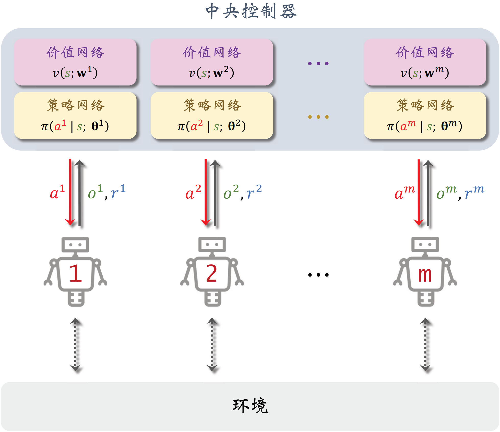
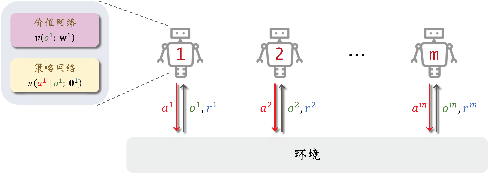
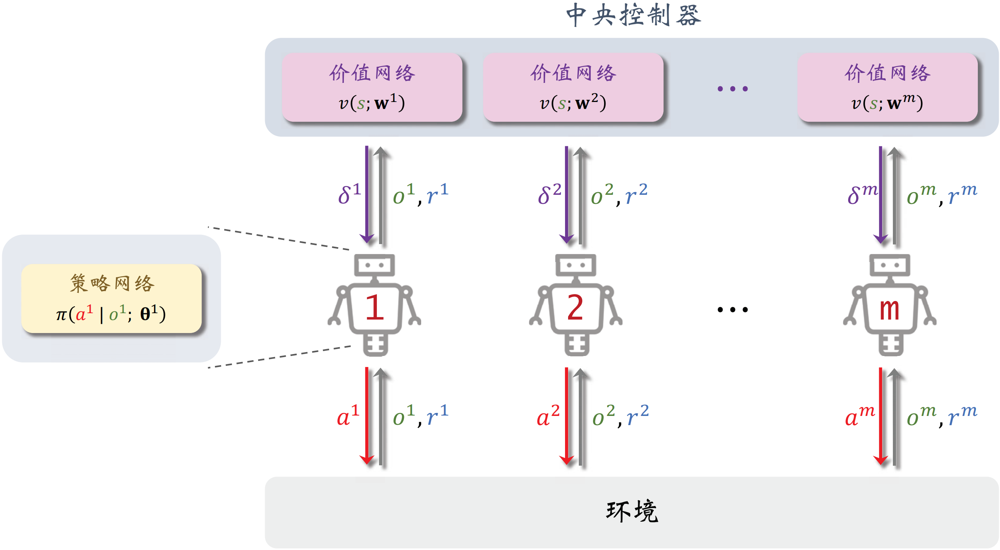
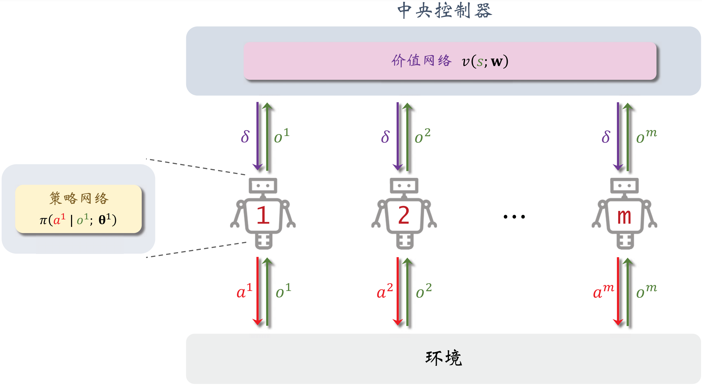
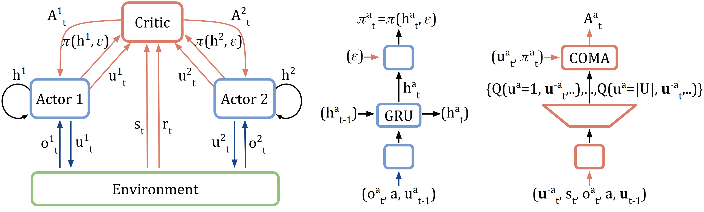

多智能体 A2C
MAN-A2C（Multi-Agent Noncooperative A2C）
选择基线函数为状态价值函数 vi(t)(st)，并通过采样轨迹对策略梯度进行近似：
∇θiJi(θi)=t=0∑TγtEs0Ea0Es1Ea1⋯EstEat[∇θilnπi(ati∣st; θi)(di(t)(st, at)qi(t)(st, at)−vi(t)(st))]≈t=0∑Tγt∇θilnπi(ati∣st; θi)di(t)(st, at)⟶γ=1t=0∑T∇θilnπi(ati∣st; θi)di(t)(st, at)=t=0∑T∇θilnπi(ati∣st; θi)[Ert+1irt+1i+γEst+1vi(t+1)(st+1)−vi(t)(st)]≈t=0∑T∇θilnπi(ati∣st; θi)[rt+1i+γvi(t+1)(st+1)−vi(t)(st)]
进一步利用价值网络 vi(s∣wi) 和目标价值网络 vi(s∣wi−) 对 TD 差分项进行近似：
∇θiJi(θi)≈t=0∑T∇θilnπi(ati∣st; θi)[rt+1i+γvi(st+1∣wi−)−vi(st∣wi)]=t=0∑Tδti∇θilnπi(ati∣st; θi)
类似地，TD 差分项 δti 用于近似策略梯度的同时也用于更新价值网络参数：
ℓi(wi)=21[δti]2=21[rt+1i+γvi(st+1∣wi−)−vi(st∣wi)]2⇒∇wiℓi(wi)=−δti∇wivi(st∣wi)
在局部观测下，为了实现 MA-A2C 可以通过局部信息来建模策略或价值来在决策或训练时降低通信成本：
| 实现方式 |
描述 |
价值网络 |
策略网络 |
训练时通信 |
决策时通信 |
| CTCE |
中心化训练、中心化决策 |
πi(ati∣st; θi) |
vi(st∣wi) |
√ |
√ |
| DTDE |
去中心化训练、去中心化决策 |
πi(ati∣ot; θi) |
vi(ot∣wi) |
× |
× |
| CTDE |
中心化训练、中心化决策 |
πi(ati∣ot; θi) |
vi(st∣wi) |
√ |
× |
CTCE
CTCE 方法完全遵循多智能体 A2C 中的定义，利用完整的信息可以做出更好的决策，但是通信成本较高。

在实现时利用梯度在线地交替进行每个智能体策略参数的更新和价值网络参数的更新：
|
w1←w1+αδt1∇w1v1(st∣w1)w2←w2+αδt2∇w2v2(st∣w2)⋮wn←wn+αδtn∇wnvn(st∣wn)
|
θ1←θ1+βδt1∇θ1lnπ1(at1∣st; θ1)θ2←θ2+βδt2∇θ2lnπ2(at2∣st; θ2)⋮θn←θn+βδtn∇θnlnπn(atn∣st; θn)
|
DTDE
DTDE 方法中每个智能体将局部观测近似为全局状态，并独立地建模价值网络，参数更新方式为：
|
w1←w1+αδt1∇w1v1(ot∣w1)w2←w2+αδt2∇w2v2(ot∣w2)⋮wn←wn+αδtn∇wnvn(ot∣wn)
|
θ1←θ1+βδt1∇θ1lnπ1(at1∣ot; θ1)θ2←θ2+βδt2∇θ2lnπ2(at2∣ot; θ2)⋮θn←θn+βδtn∇θnlnπn(atn∣ot; θn)
|
这种方法本质上是独立的单智能体 A2C 算法，忽略了智能体之间的相互影响，在实践中效果往往不佳。

CTDE
CTDE 方法在训练时通过通信收集所有智能体的观测组成全局状态进行训练，参数更新方式为：
|
w1←w1+αδt1∇w1v1(st∣w1)w2←w2+αδt2∇w2v2(st∣w2)⋮wn←wn+αδtn∇wnvn(st∣wn)
|
θ1←θ1+βδt1∇θ1lnπ1(at1∣ot; θ1)θ2←θ2+βδt2∇θ2lnπ2(at2∣ot; θ2)⋮θn←θn+βδtn∇θnlnπn(atn∣ot; θn)
|

虽然策略被近似依赖于局部观测，但是中心化的训练协调了不同智能体的行为，相较于 DTDE 可以获得更好的效果。在训练完成后，每个智能体独立地通过局部观测进行去中心化决策，效率又优于 CTCE。
MAC-A2C（Multi-Agent Cooperative A2C）
在完全合作关系下，所有智能体的奖励一致，可以对中心化训练中状态价值的建模简化得到 MAC-A2C 算法：
|
w←w+αδt∇wv(st∣w)
|
θ1←θ1+βδt∇θ1lnπ1(at1∣ot; θ1)θ2←θ2+βδt∇θ2lnπ2(at2∣ot; θ2)⋮θn←θn+βδt∇θnlnπn(atn∣ot; θn)
|

COMA（COunterfactual Multi-Agent policy gradient）
在 MAC-A2C 中，用于指导每个智能体策略提升的基线函数均为：
v(t)(st)=Eatq(t)(st, at)=Eat1∼π1(⋅∣st)Eat2∼π2(⋅∣st)⋯Eatn∼πn(⋅∣st)q(t)(st, at1, at2, ⋯, atn)
当固定其他智能体的动作 at−i=at∖ati，如果某个智能体所有动作 ati 都满足 q(t)(st, ati, at−i)>v(t)(st)，则：
θi←θi+α∇θilnπi(ati∣st; θi)[q(t)(st, at)−v(t)(st)]
总是会倾向于增加 πi(ati∣st; θi)，即使这一动作的价值低于这一智能体其他动作的平均价值：
q(t)(st, ati, at−i)<vi(t)(st, at−i)=Eati∼πi(⋅∣st)q(t)(st, ati, at−i)
也相应地会降低其他更优动作的采样概率。由于信度分配过于均匀，导致一些智能体在以上的随机梯度下更新策略的效率较低。而 COMA 因此将基线函数改为以上的反事实基线函数 vi(t)(st, at−i)：
∇θiJi(θi)=t=0∑TγtEs0Ea0Es1Ea1⋯EstEat[∇θilnπi(ati∣st; θi)(q(t)(st, at)−vi(t)(st, at−i))]≈γ=1t=0∑T∇θilnπi(ati∣st; θi)⎣⎢⎡q(st, ati, at−i∣w)−ati∑πi(ati∣st; θi)q(st, ati, at−i∣w)⎦⎥⎤
